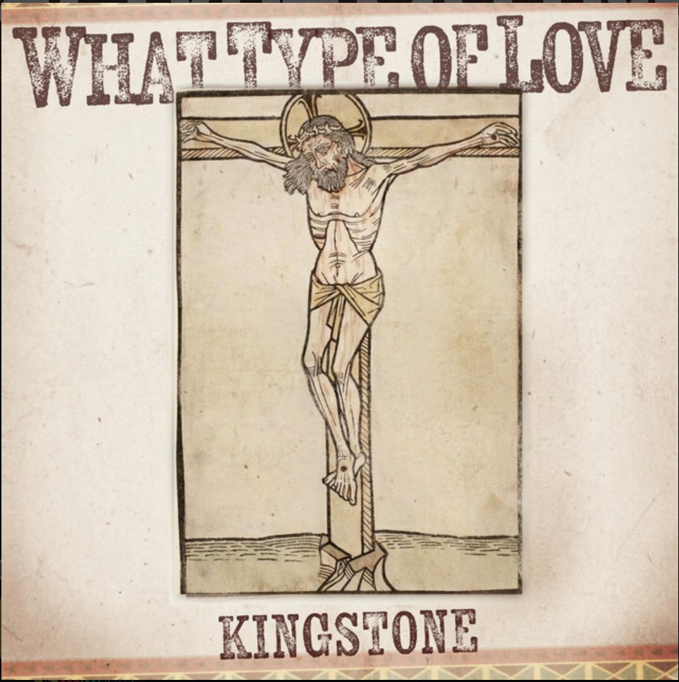
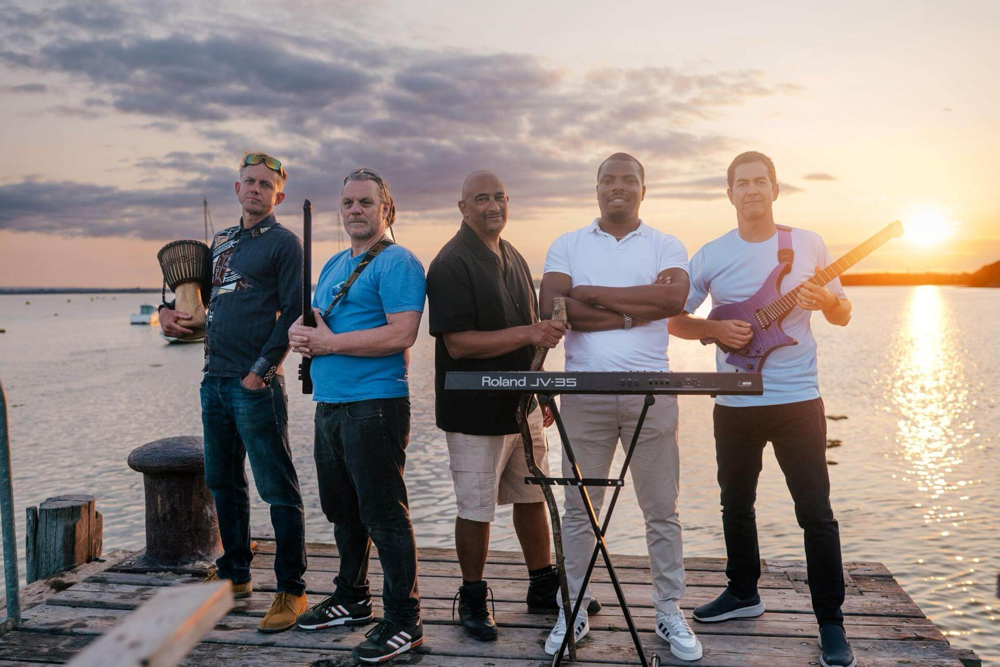

Released: 17 April
We’re excited to share our latest offering! Our new single What Type of Love is out now on all platforms.
What Type of Love is a worship reflection expressed through a soulful blend of gospel and reggae. It explores the overwhelming sacrifice of Jesus Christ—from the emotional weight of Gethsemane to his victory over death—inviting listeners to move beyond observation and respond to a love that is as costly as it is restorative.
If you like it, you can help it to grow by liking, following and sharing! Be blessed as you enjoy this new song from Kingstone!
We are a five-piece reggae band. We are followers of Jesus Christ and have been born again. Our lives have been dramatically transformed.
We have faith in God and believe that the Bible is the inspired Word of God, written by people who were moved by the Holy Spirit.
You can find our full story and more pictures on the rest of our website.
